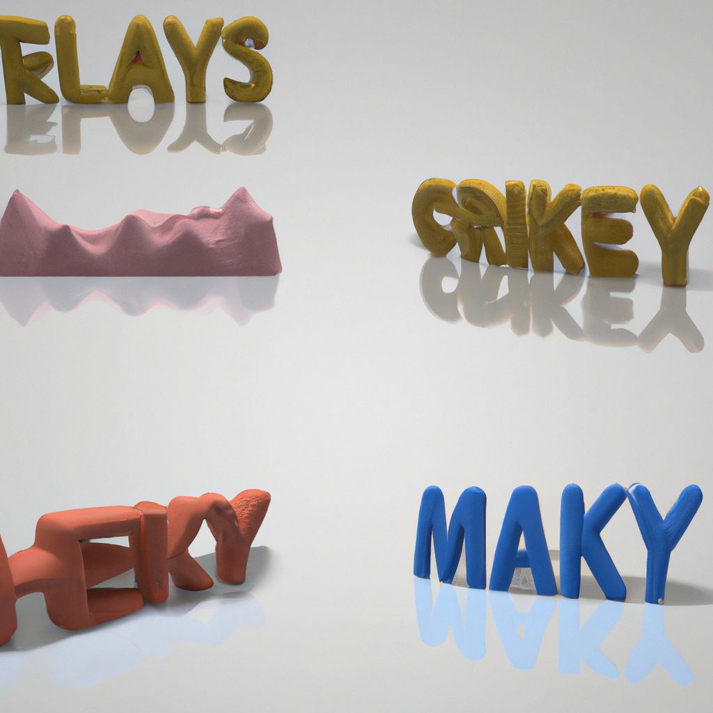

The future of radiology and AI
In recent years, artificial intelligence has made great strides in the medical field. From diagnosing diseases to providing medical advice, many experts believe that AI will soon replace radiologists in the near future.
However, I believe that AI will never replace the radiologist. Despite the advancements in AI, it is still unable to provide the same level of accuracy and expertise as a trained radiologist. AI can detect the presence of a disease, but it cannot interpret the severity of the disease or its potential complications. This is something that only a trained radiologist can do, as they have the experience and knowledge to interpret the data and provide a more accurate diagnosis.
In addition, AI can be easily fooled or confused by certain images. For example, AI may interpret an image of a tumor as a benign mass, leading to an incorrect diagnosis. This type of mistake can be avoided by a radiologist who can interpret the image with a more accurate diagnosis.
Finally, AI does not possess the same level of human judgement and intuition as a radiologist. AI cannot interpret subtle nuances or differences in an image that a radiologist may be able to. By missing these subtle details, AI may provide an incorrect diagnosis.
Overall, I believe that AI will never replace the radiologist. AI cannot provide the same level of accuracy and expertise as a trained radiologist. It is also prone to making mistakes and missing subtle nuances that a radiologist may be able to detect. Therefore, AI will never be able to provide the same level of care as a trained radiologist.